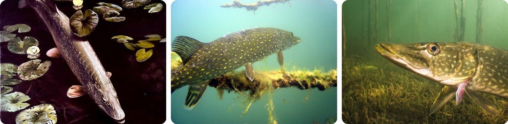
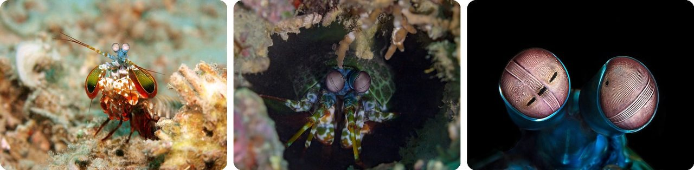
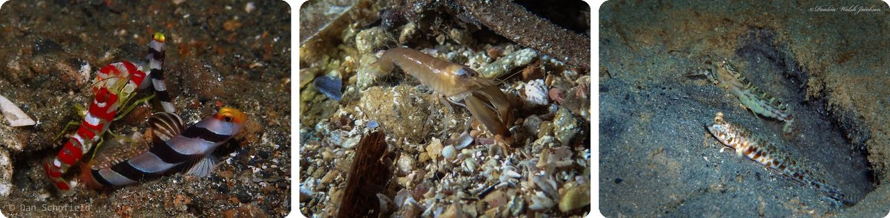
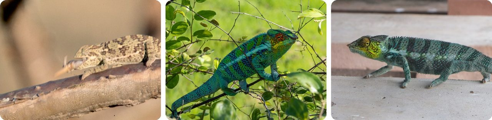
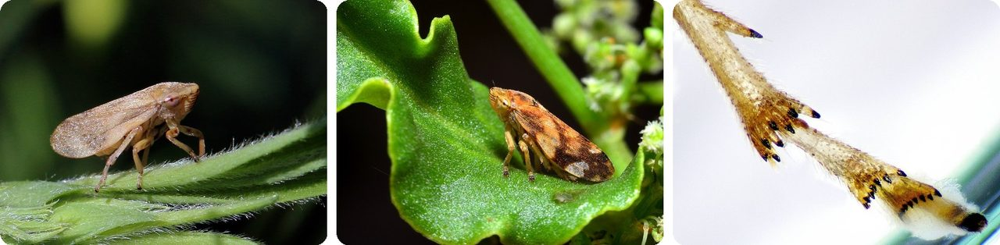
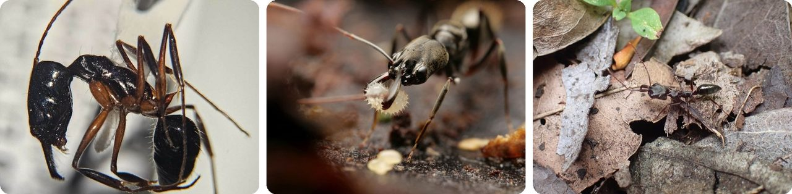
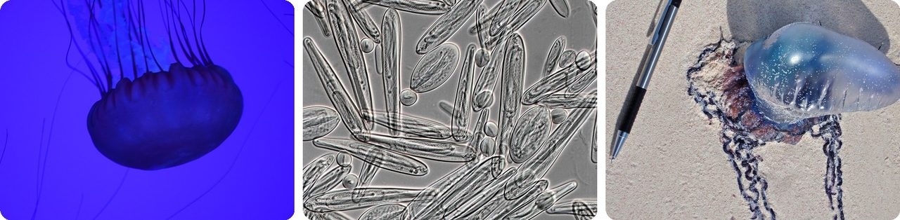
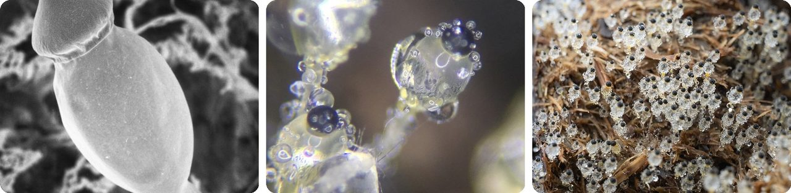
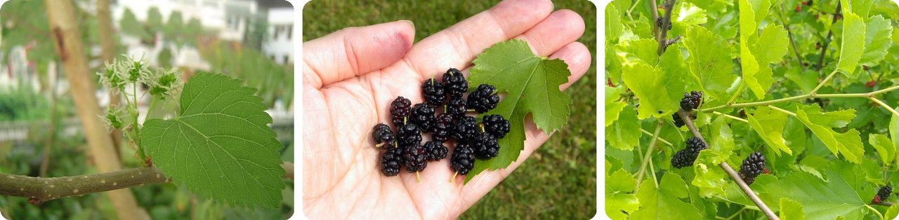
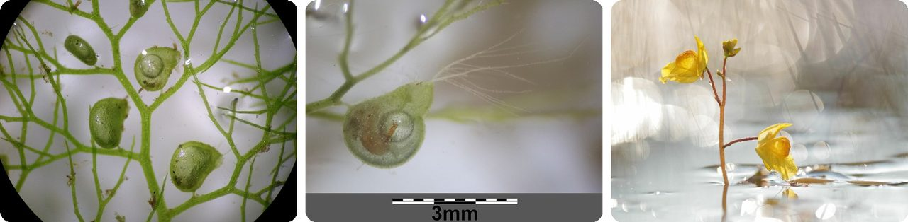

🌍 Top 10 Surprisingly Fast Accelerators
Oct 23, 2026
1. 🐟 The northern pike launches harder than a supercar

The northern pike is an ambush hunter in lakes and rivers across the northern half of the world. It hangs perfectly still among the weeds, holding its place with tiny movements of its fins, and waits.When a fish swims close, it bends its body → pushes off hard with its big tail and fins → and shoots forward. Scientists have clocked pike hitting about 12 g of acceleration, roughly 10 times harder than a supercar leaving the starting line.
It grabs prey sideways in a mouthful of backward-pointing teeth, then turns it headfirst to swallow. To stop, it simply curls into a C shape.
Basically, it's a torpedo that waits in the weeds.
2. 🦐 The mantis shrimp's punch accelerates like a bullet

The peacock mantis shrimp has a pair of club-shaped arms folded under its body like a spring-loaded hammer. When it strikes, the club goes from standing still to 83 km/h with an acceleration of about 10,400 g.It's so fast the water can't keep up. The strike rips open tiny bubbles of vapor between the club and its target, and when they collapse they deliver a second blow, so the prey gets hit twice.
The strike is even over before a signal could travel down its nerves, so it has to be locked and loaded ahead of time. Some species reach about a third of the acceleration of a fired pistol bullet.
Think of it as a crossbow built into a shrimp's elbow.
3. 🦐 The snapping shrimp's claw fires a bubble nearly as hot as the Sun

Snapping shrimp are only 3 to 5 cm long, but one of their claws is huge. They cock it open, lock it in place, then let it snap shut.The snap fires a bubble out of the claw at about 90 km/h, with enough pressure to kill small fish. When the bubble collapses, it gives off a faint flash of light. If that light came from heat, it would need about 4,700 °C, almost as hot as the surface of the Sun.
Some snapping shrimp share burrows with goby fish: the shrimp digs and keeps house, and the goby keeps watch.
The world's most dangerous water pistol is the size of your thumb.
4. 🦎 A chameleon's tongue hits its target in 0.07 seconds

A chameleon's tongue sits on a long bony rod in its throat, wrapped in a ring of muscle. The muscle squeezes around the rod, stretching springy tissue inside the tongue like a rubber band.When the spring lets go, the tongue shoots out at more than 41 g and can reach an insect in 0.07 seconds, faster than you can blink. For comparison, fighter pilots risk blacking out at about 9 g.
The launch is so powerful that muscle alone couldn't do it. That's how scientists worked out it must be powered by stored spring energy, like an arrow from a bow.
In other words, the chameleon catches dinner with a slingshot hidden in its mouth.
5. 🦗 A tiny froghopper out-jumps a flea

Froghoppers are small sap-sucking bugs found on garden plants. Their young, called spittlebugs, hide inside blobs of foam on stems.The adults are jump champions. A froghopper can accelerate at 4,000 m/s² over just 2 mm, more than 400 g, and some species leap 70 cm straight up. For their weight, that beats fleas.
Spittlebugs can jump 100 times their own body length. For a person, that would be like leaping nearly two football fields.
The little bug in the foam on your plants is an Olympic high-jumper.
6. 🐜 Trap-jaw ants snap their jaws thousands of times faster than a blink

Trap-jaw ants have long, straight jaws that can swing open 180°, like a bear trap. An internal latch locks them open, and tiny trigger hairs sit on the inside.When something brushes those hairs, the jaws slam shut in about 130 microseconds, thousands of times faster than a blink. One study measured them closing at up to 230 km/h, with a force about 300 times the ant's body weight.
That's an acceleration of around 100,000 g. Only the Dracula ant's jaws are known to move faster.
Basically, it's carrying a loaded bear trap on its face.
7. Jellyfish stingers fire faster than almost anything alive

Jellyfish, sea anemones and their relatives are covered in stinging cells. Each one holds a tiny capsule with a coiled tube inside, like a harpoon in a can.When something touches it, the capsule fires and the tube shoots out, pierces the target, and injects venom. Research in 2006 found this can happen in about 700 nanoseconds (billionths of a second), an acceleration of up to 5,410,000 g.
That's how a soft, slow-drifting animal can catch fish: its tentacles are loaded with tiny harpoons waiting to go off.
Think of it as a body made of booby traps.
8. 🍄 A tiny dung fungus fires its spores at 20,000 g

Pilobolus is a tiny fungus that grows on the dung of plant eaters like horses. Each one is a clear stalk less than 1 cm tall, with a balloon-like swelling topped by a black cap full of spores.The balloon works like a lens and focuses light, so the stalk aims itself at the morning sun. Pressure builds inside to about 7 times normal air pressure → the balloon bursts → the cap launches from 0 to 20 km/h in 2 millionths of a second, over 20,000 g.
The cap can fly up to 3 m and stick to grass. A grazing animal eats the grass, the spores ride through its gut, come out in fresh dung, and the cycle starts again.
It's a cannon made of goo that aims itself at the Sun.
9. 🌳 White mulberry flowers fling pollen at half the speed of sound

The white mulberry is the tree silkworms are raised on, native to China and India. Its flowers hang in small fuzzy clusters called catkins.Inside, the stamens (the pollen-carrying parts) are bent back under tension like tiny catapults. When they release, the stored energy lets go in 25 millionths of a second and throws pollen into the air at about 610 km/h, faster than a Formula 1 car.
That's about half the speed of sound, the fastest movement known in any plant.
In other words, the tree in the park is secretly firing pollen like a slingshot.
10. 🌿 The bladderwort sucks in prey in a hundredth of a second

Bladderworts are rootless water plants covered in tiny bladders, some smaller than a grain of rice. Each bladder is "set" with lower pressure inside than out, like a squeezed bulb, and a little trapdoor holds it shut.When a water flea or mosquito larva brushes the trigger hairs → the trapdoor flips open → water and prey rush in → the door shuts again. The whole thing takes just 10 to 15 milliseconds, about a hundredth of a second.
Bigger species can even catch baby fish and young tadpoles this way.
It's a vacuum cleaner that eats whatever it sucks up.
Fun fact
Snapping shrimp are so loud that they compete with sperm whales and belugas for the title of loudest animal in the sea. When they live in big colonies, the crackle of their claws can interfere with sonar and underwater communication. The noise is enough of a problem for navies that it can get in the way of hunting submarines. Next time: the loudest animals on Earth.
Photo credits (Wikimedia Commons)
- #1: Northern pike fish underwater esox lucius linnaeus.jpg by Hines Robert W, U.S. Fish and Wildlife Service, Public domain
- #1: Europaeischer Hecht.jpg by Gunter Küchler / Berlin (Masturbius), Public domain
- #1: Esox lucius · 8600 Silkeborg, Danmark by (c) Klaus Kevin Kristensen, some rights reserved (CC BY), CC BY
- #2: Odontodactylus scyllarus1.jpg by Jens Petersen, CC BY 2.5
- #2: Camarón mantis (Odontodactylus scyllarus), Anilao, Filipinas, 2023-08-24, DD 164.jpg by Diego Delso, CC BY-SA 4.0
- #2: Odontodactylus scyllarus eyes.jpg by Cédric Peneau, CC BY-SA 4.0
- #3: Alpheus randalli · Lembeh Straits, Mawali, Lembeh Utara, Bitung City, North Sulawesi, Indonesia by (c) Dan Schofield, some rights reserved (CC BY), CC BY
- #3: Alpheus macrocheles · Ensuès-la-Redonne, Frankreich by (c) Julien Renoult, some rights reserved (CC BY), CC BY
- #3: Alpheus floridanus · Riviera Beach, FL, USA by (c) Pauline Walsh Jacobson, some rights reserved (CC BY), CC BY
- #4: Chameleon catching prey - DPLA - be0b8c96f3ee6b396f72d0578fbcc1c0.jpg by Garst, Warren, 1922-2016, photographer, CC BY-SA 4.0
- #4: Furcifer pardalis · Ambanja, Madagascar by (c) Piotr Lukasik, some rights reserved (CC BY), CC BY
- #4: Furcifer pardalis · Nosy Tanikely, Madagaskar by (c) Lennart Hudel, some rights reserved (CC BY), CC BY
- #5: Meadow froghopper (Philaenus spumarius).JPG by Charles J. Sharp, CC BY-SA 4.0
- #5: Pienik ślinianka (Philaenus spumarius).jpg by 1bumer, CC BY-SA 4.0
- #5: Common Froghopper - Philaenus spumarius Hind tarsi (50166250808).jpg by AJC1, CC BY-SA 2.0
- #6: Odontomachus bauri · Jiménez, Río Grande 00745, Puerto Rico by (c) Bennett Grappone, some rights reserved (CC BY), CC BY
- #6: Odontomachus bauri · Eloy Alfaro, Ecuador by no rights reserved, CC0
- #6: Odontomachus bauri · Pointe-Noire 97116, Guadeloupe by (c) Théalie Dhellemmes, some rights reserved (CC BY-SA), CC BY-SA
- #7: A Pacific Sea Nettle- stay away from this jellyfish (27823365541).jpg by shankar s. from Dubai, united arab emirates, CC BY 2.0
- #7: Chironex fleckeri nematocysts 01.jpg by Brinkman DL, Aziz A, Loukas A, Potriquet J, Seymour J, Mulvenna J, CC BY-SA 3.0
- #7: Physalia phyalis (Portuguese man-of-war) (San Salvador Island, Bahamas) 6 (15461050334).jpg by James St. John, CC BY 2.0
- #8: Pilobolus umbonatus 1.jpg by zygolife, CC BY-SA 2.0
- #8: Pilobolus crystallinus · Pelham Bay Park, New York, NY, US by no rights reserved, CC0
- #8: Pilobolus 348325648.jpg by Alex Abair, CC BY 4.0
- #9: MAlba23032008.JPG by Jeekc, CC BY-SA 4.0
- #9: Morus alba · Northern Kentucky University, Highland Heights, KY, USA by (c) M. Whitson, some rights reserved (CC BY), CC BY
- #9: Morus alba · Moscow Oblast, Russia, 143056 by (c) Dmitriy Bochkov, some rights reserved (CC BY), CC BY
- #10: Utricularia australis sl20.jpg by Stefan.lefnaer, CC BY-SA 4.0
- #10: Utricularia australis sl68.jpg by Stefan.lefnaer, CC BY-SA 4.0
- #10: Utricularia × neglecta · 51190 Le Mesnil-sur-Oger, France by (c) Thierry Arbault, some rights reserved (CC BY), CC BY


,_Anilao,_Filipinas,_2023-08-24,_DD_164.jpg){kind=link}


.JPG){kind=link}
.jpg){kind=link}
.jpg){kind=link}
.jpg){kind=link}

_(San_Salvador_Island,_Bahamas)_6_(15461050334).jpg){kind=link}